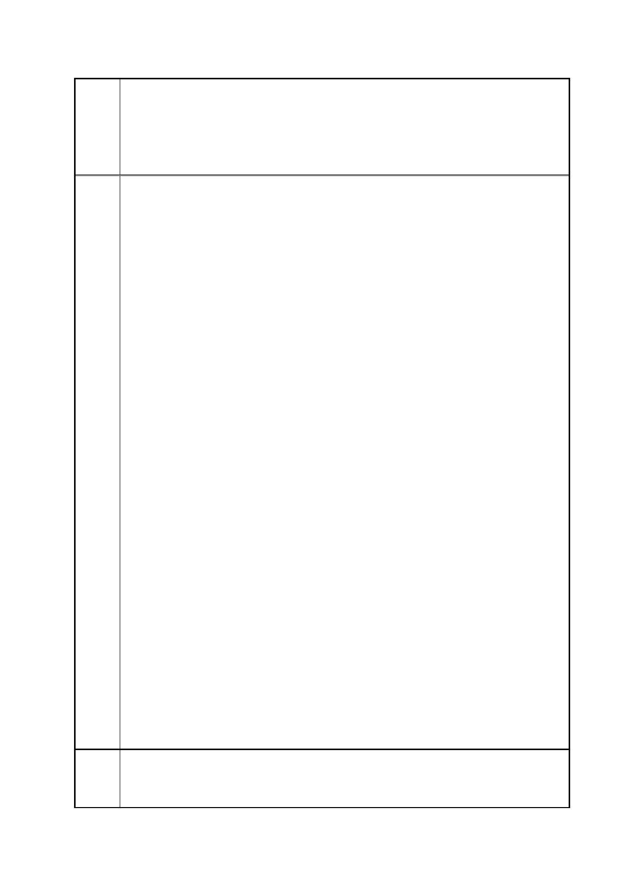

臺北市都市計畫委員會 公民或團體陳情意見綜理表
案
名
市府
回應
「變更臺北市信義區逸仙段二小段 33 地號等 21 筆土地（原臺北機廠）
工業區為創意文化專用區、特定專用區、道路及綠地用地主要計畫案」
及「擬定臺北市信義區逸仙段二小段 33 地號等 21 筆土地（原臺北機
廠）創意文化專用區、特定專用區、道路及綠地用地細部計畫暨劃定
都市更新地區計畫案」
（3）保存模型室。
（4）現有的蒸汽大澡堂，是全國唯一的一座建於日據時代的蒸汽大
澡堂，保留為古蹟
三、建請在園區內設立圖書館（或可規劃為工業技術專門的圖書館）。
四、台北機廠廠區內的樹木不多，應要保留在廠區內不要外移。綠地
空間可多規劃一些，或可在人行道上多植栽些路樹形成綠色隧道，既
可美化環境又可調節空氣。
五、人行道拓寬及種植行道樹：請將機廠現狀的外圍牆退縮，拓寬成
八公尺寬的人行道，並種植行道樹。範圍：市民大道、東興路、基隆
路、基隆路一段 102 巷（目前只有一米寬人行道）、忠孝東路四段 553
巷 52 弄住戶後面（目前沒有人行道）等，須規劃出有整體性且完整
的人行道。
六、市民大道高架橋下空間已閒置多年，建請有關單位能妥善運用此
空問，在市民大道高架橋下規劃『四層樓高的建物』：
（1）橋下第一、二層樓：規劃成一個高品質小市集可設置販賣鮮花
蔬果攤位及餐飲小吃，並提供一定比例攤位名額回饋給當地居民申請
（例如：具備中低收入戶資格或失業者）。幫助他們經濟獨立，有工
作可做。
（2）橋下第三、四層樓：規劃為停車場，可疏解松山文創及周邊的
停車問題 （目前松山文創周邊的停車位已不敷使用）
七、變更地目：由於「忠孝東路四段 553 巷 52 弄 l 至 29 號（單
號）」地段之住戶的地目與台北機廠是連接的，因而與台北機廠一併
被規劃成相同的地目（工業用地），直到現在，上開地段仍然是工業
區用地。現在台北機廠要進行開發案，建請有關單位將「忠孝東路四
段 553 巷 52 弄 l 至 29 號（單號）」地段一起納入變更為（住四）住
宅區用地，以免影響週遭地區未來整體的發展，亦有利政府都更的推
動。
八、有關任何重大開發案，政府在規劃中，應先邀集當地里的台北市
民，召開公聽會（聽證會），採納各方的意見，讓此開發案成功規劃
為有特色，能吸引國內外觀光客的鐵道園文化園區，達到互惠雙贏。
一、有關臺北機廠再利用之定位及鐵道文化資產之保留方式，詳如編
號 1 市府回應內容。
二、本計畫區內重要文化資產業之保留內容，詳如編號 25 市府回應
第 39 頁/共 154 頁